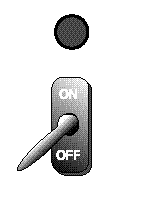

How many patterns can be formed with a single bit?
Two ― 0 and 1 (or "off" and "on", or "false" and "true")

A bit can be 0 or 1. With one bit there are two possible patterns. How many patterns can be formed with two bits? Here is a complete list:
0 0
0 1
1 0
1 1
Looks like 4 patterns.
Is the pattern 0 1 different
from the pattern 1 0?